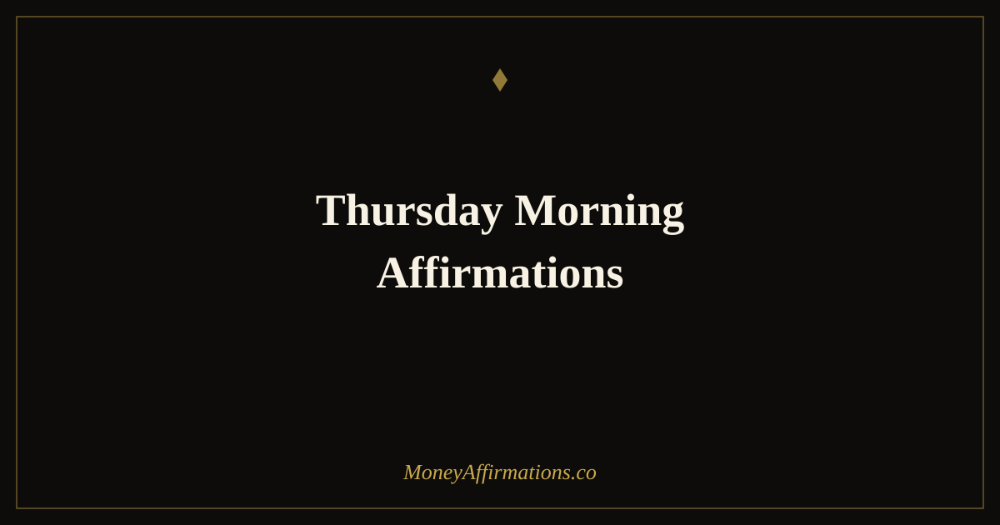

Thursday Morning Affirmations: 30 Statements to Finish Your Week Strong

Thursday morning sits at one of the most psychologically interesting points in the working week. Four days of effort are behind you. The finish line is within sight — close enough to feel, but far enough that what you do today and tomorrow still determines whether the week becomes one you are proud of. Thursday is when people who build wealth consistently distinguish themselves from those who do not: they show up fully, regardless of how the week has felt, and they finish what they started.
These 30 Thursday morning affirmations are designed for exactly that moment. They acknowledge the week's momentum — whatever shape it has taken — and orient the mind firmly toward completion, follow-through, and the satisfaction of finishing strong. Used before the day begins, they set up Thursday and the day that follows as the most productive part of your week.
What are Thursday morning affirmations?
Thursday morning affirmations are present-tense statements oriented specifically toward the energy of completing the week with full intention, financial focus, and the drive to finish what has been started. They address the psychological patterns most common on Thursdays: fatigue that tempts premature coasting, the pull toward the weekend before the week's work is done, and the low-grade satisfaction with "good enough" that prevents truly strong finishes.
Used as part of a consistent daily practice, Thursday affirmations become a weekly ritual of recommitment — a reminder that the last two days of the working week hold as much financial potential as the first two. The complete daily foundation that supports this is built through the prosperity affirmations collection.
30 Thursday morning affirmations
- This Thursday I finish what I started and I finish it well — the week is not over until Friday ends.
- I bring the same energy to Thursday that I brought to Monday because my goals deserve it.
- Thursday is one of my most productive days — I close tasks, follow up, and drive results.
- I am grateful for four days of progress and I use today to make the fifth count.
- I resist the pull to coast and instead I double down on the financial actions that matter most.
- This Thursday I complete the highest-priority task on my list and I do it with full commitment.
- My financial results this week are being shaped right now — and I am shaping them in my favour.
- I wake this Thursday with energy, gratitude, and the conviction that the best of my week is still ahead.
- Thursday is a day for follow-through — I send the email, make the call, complete the task.
- I am building a reputation — in my own mind and in my work — for finishing well, every single week.
- The wealth I am building requires consistent effort, and this Thursday I deliver it without hesitation.
- I approach this day with the same clarity and focus that I brought to every other day this week.
- This Thursday I take at least one action that directly advances my financial goals for the month.
- I am not tired — I am close, and close is when I push hardest.
- My best work this week may still be ahead of me — and today is the day to produce it.
- I end today having done what I said I would do, and I carry that integrity into the rest of the week.
- This Thursday I reflect on the week's wins, build on them, and close any open loops before Friday.
- I am a person who finishes strong — Thursday proves this, and Friday confirms it.
- My financial progress is built week by week, and this week I finish it powerfully.
- I am grateful for this Thursday — for the opportunity to work, to earn, and to move forward.
- Today I handle the tasks I have been putting off because I know that delay has a financial cost.
- Thursday is when the week's financial decisions solidify — I make them from strength, not fatigue.
- I am disciplined enough to give Thursday the same quality of attention I gave Monday.
- I release any end-of-week fatigue and replace it with the focused energy of someone who finishes what they start.
- This Thursday brings me closer to my weekly financial targets and I seize every opportunity to advance.
- I take pride in my work ethic — Thursday is one of the days that defines it.
- My income grows because I show up fully on the days when it would be easier not to — today is one of those days.
- This morning I set the tone for a strong Thursday and a strong Friday that follows it.
- I finish the week the way I started it — with intention, with energy, and with financial purpose.
- This Thursday I close the week knowing I gave everything it deserved, and I am proud of that.
How to use these affirmations
Thursday morning affirmations work best when they are followed immediately by a brief review of the week's open financial commitments — the tasks that were started but not finished, the follow-ups that are outstanding, the decisions that have been deferred. Choose two or three affirmations from this list that feel most relevant to that review, say them aloud with genuine conviction, and then commit to one specific action before the end of Thursday that closes the week's most important loop.
The affirmation without the action is motivation without direction. The action without the affirmation is effort without the right psychological state. Together, they produce the Thursday that separates a financially productive week from one that simply passed. Used every Thursday for a month, this practice builds a pattern of consistent weekly completion that compounds into professional reputation, financial results, and the kind of self-respect that comes from knowing you always finish what you start.
Why the end of the week is where financial habits are built or broken
Behavioural economics research on weekly patterns reveals a consistent finding: the decisions made in the final two days of a working week have a disproportionate impact on financial outcomes. Deals that close on Thursday and Friday, invoices sent, conversations completed — these actions concentrate financial results at the week's end for those who maintain their standards throughout. For those who coast, the same window is where income and opportunity quietly slip away.
The mechanism is psychological momentum. People who complete Thursdays strongly carry that completion energy into Fridays, which then carries into the following Monday. The compound effect of 52 strong Thursdays per year — versus 52 that faded into weekend anticipation early — is enormous when measured in financial results, professional reputation, and self-belief. Thursday morning affirmations are the deliberate intervention that keeps the momentum alive at the exact moment it is most tempted to drop.
Tips to make them work faster
- Review your week's commitments before choosing your affirmations. The most effective Thursday affirmation targets exactly what you need to do today. Make the choice deliberately, not randomly.
- Identify the one task that, if completed today, would make the whole week worth it. Affirmations done, go do that task first. Do not wait for inspiration — momentum creates inspiration.
- Do not schedule non-essential meetings on Thursday afternoons. Protect the afternoon for deep work that completes the week's financial priorities. Guard the time as deliberately as you guard your capital.
- Write a brief Thursday evening reflection. What did I finish? What did I move forward? What am I proud of? This review makes Friday's start easier and next Thursday's affirmations more grounded in evidence.
- Celebrate completions, not just outcomes. Finished a proposal, sent an invoice, completed a project — these are worth acknowledging. The identity of someone who finishes well is built on a pattern of noticing and celebrating completions.
Frequently Asked Questions
Why is Thursday morning particularly important for affirmation practice?
Thursday is the penultimate working day of the week for most people, which makes it one of the highest-leverage days for financial action. Tasks completed on Thursday can still be delivered, invoiced, or followed up before the week closes. Decisions made on Thursday have the weight of the full week's context behind them. And crucially, Thursday is when the temptation to coast toward the weekend can reduce the quality of effort and attention. Morning affirmations on Thursdays counteract this pull directly, reinforcing the identity and intention needed to finish the week at full strength.
What should I focus on in my Thursday morning affirmation practice?
Thursday mornings benefit most from affirmations focused on completion, follow-through, and the satisfaction of finishing strong. Lean into statements about closing the week well, taking the actions you committed to on Monday, and celebrating the progress made. Avoid affirmations that set entirely new goals for Thursday — the end of the week is better served by harvesting what has been planted than by planting new seeds. Use this morning to reinforce commitment to the financial goals already in motion.
Can I use Thursday morning affirmations even if my week has not gone well so far?
Yes — and this is precisely when they are most valuable. A difficult Monday through Wednesday can create a narrative of failure that turns a recoverable week into an abandoned one. Thursday morning affirmations interrupt that narrative before it solidifies. They reframe Thursday not as the end of a bad week but as the beginning of a strong finish. Two excellent days — Thursday and Friday — can change the week's financial outcome and, more importantly, the story you tell yourself about your consistency and capability.
Thursday is where the week is won. Build the daily practice that makes every morning as intentional as this one with the full prosperity affirmations collection and make finishing strong your most reliable weekly habit.